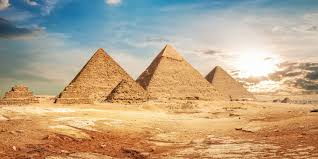

The Pyramids of Giza
Kung may isang lugar na parang literally galing sa history book, yun yung Egypt. Yung mga Pyramids of Giza is one of those things na alam mo na since bata ka pa pero pag naisip mo na makikita mo sila in person, ibang level na yung excitement. Parang ang laki ng tanong sa isip ko, paano nila nagawa yun thousands of years ago without modern technology? Gusto ko talaga mapuntahan yun at makita mismo kung gaano sila kalaki.

Why I Want to Visit Egypt
Egypt for me is yung tipong place na pag pinuntahan mo, parang bumabalik ka sa past. Yung history nila is sobrang rich, from the pharaohs, to the Sphinx, to the Nile River. Lahat ng yon, di lang basta pictures ang gusto ko, gusto ko talaga maramdaman yung vibe ng lugar.
Gusto ko rin maranasan yung desert landscape ng Egypt. Sa atin, hindi tayo sanay sa ganyan, so yung makita mo yung malawak na disyerto tapos nasa gitna nun yung mga pyramids, sobrang surreal nung picture sa isip ko. Parang movie set lang pero totoo.
Someday mapupuntahan ko na rin yan. Egypt is one of those places na kahit isa ka lang sa milyun-milyong turista na pumunta doon, mararamdaman mo pa rin kung gaano siya kaspecial.